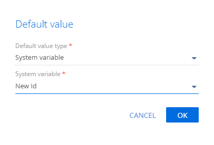

Схема — основа конфигурации Creatio. С точки зрения программной реализации схема — это класс ядра, который наследуется от базового класса Schema. Конфигурационные элементы (значения выпадающего списка Добавить (Add) панели инструментов реестра раздела Конфигурация (Configuration)), представлен схемой соответствующего типа (выпадающий список Тип (Type)).


Клиентский модуль
Клиентский модуль — это отдельный блок функциональности, который загружается и запускается по требованию. В соответствии с подходом AMD и несмотря на некоторые функциональные различия, клиентские модули Creatio имеют одинаковую структуру описания.
Клиентские модули используются для front-end разработки (на языке JavaScript) в приложении Creatio.
Виды схем клиентских модулей:
- Невизуальный модуль (схема модуля).
- Визуальный модуль (схема модели представления).
- Модуль расширения и замещающий клиентский модуль (схема замещающей модели представления).
Модули описаны в статье Виды модулей.
Схема модуля
Алгоритм разработки схемы:
- Перейдите в раздел Конфигурация (Configuration) и выберите пользовательский пакет, в который будет добавлена схема.
- На панели инструментов реестра раздела нажмите Добавить —> Модуль (Add —> Module).
/scr_add_module.png)
-
В дизайнере модуля заполните свойства схемы.
Основные свойства схемы:
- Код (Code) — название схемы (обязательное свойство). Должно содержать префикс (по умолчанию Usr), указанный в системной настройке Префикс названия объекта (код SchemaNamePrefix), символы латинского алфавита и цифры.
- Заголовок (Title) — локализуемый заголовок схемы (обязательное свойство).
- Пакет (Package) — пользовательский пакет, в котором создается схема. Заполняется автоматически и недоступно для редактирования.
- Описание (Description) — локализуемое описание схемы.
Для применения заданных свойств нажмите Применить (Apply).
Панель свойств позволяет изменить основные свойства схемы (кнопка
/scr_edit_button.png) ) и задать дополнительные (кнопка
) и задать дополнительные (кнопка /scr_add_button.png) ). Дополнительными свойствами являются Локализуемые строки (Localizable strings), Сообщения (Messages), Изображения (Images).
). Дополнительными свойствами являются Локализуемые строки (Localizable strings), Сообщения (Messages), Изображения (Images). -
В дизайнере модуля добавьте исходный код. Название модуля в функции define() должно совпадать с названием схемы (свойство Код (Code).
Если при написании кода допущена ошибка, то слева возле номера строки отображается тип ошибки (ошибка
 или предупреждение
или предупреждение  ). При наведении курсора на тип ошибки отображается всплывающая подсказка с текстовым описанием.
). При наведении курсора на тип ошибки отображается всплывающая подсказка с текстовым описанием. - На панели инструментов дизайнера модуля нажмите Сохранить (Save).
Схема модели представления
Виды схем модели представления:
- Схема страницы записи раздела (пункт Модель представления страницы (Page view model)).
- Схема страницы раздела с реестром и итогами (пункт Модель представления раздела (Section view model)).
- Схема страницы детали с реестром (пункт Модель представления детали с реестром (Detail (list) view model)).
- Схема страницы детали с полями (Модель представления детали с полями (Detail (fields) view model)).
Алгоритм разработки схемы:
- Перейдите в раздел Конфигурация (Configuration) и выберите пользовательский пакет, в который будет добавлена схема.
- На панели инструментов реестра раздела нажмите Добавить (Add) и выберите вид схемы модели представления.
-
В дизайнере модуля заполните свойства схемы.
Основные свойства схемы:
- Код (Code) — название схемы (обязательное свойство). Должно содержать префикс (по умолчанию Usr), указанный в системной настройке Префикс названия объекта (код SchemaNamePrefix), символы латинского алфавита и цифры.
- Заголовок (Title) — локализуемый заголовок схемы (обязательное свойство).
- Пакет (Package) — пользовательский пакет, в котором создается схема. Заполняется автоматически и недоступно для редактирования.
- Родительский объект (Parent object) — родительский объект для текущего объекта. В выпадающем списке выберите родительский объект, свойства которого необходимо наследовать.
- Описание (Description) — локализуемое описание схемы.
Для применения заданных свойств нажмите Применить (Apply).
Панель свойств позволяет изменить основные свойства схемы (кнопка
) и задать дополнительные (кнопка ). Дополнительными свойствами являются Локализуемые строки (Localizable strings) и Изображения (Images). -
В дизайнере модуля добавьте исходный код. Название модуля в функции define() должно совпадать с названием схемы (свойство Код (Code). Схема модели представления обязательно должна быть наследником базовой схемы BaseModulePageV2.
Если при написании кода допущена ошибка, то слева возле номера строки отображается тип ошибки (ошибка
или предупреждение ). При наведении курсора на тип ошибки отображается всплывающая подсказка с текстовым описанием. - На панели инструментов дизайнера модуля нажмите Сохранить (Save).
Схема замещающей модели представления
Схемы замещающих моделей представления предназначены для расширения функциональности существующих схем. При этом существующие схемы также могут быть замещающими и принадлежать разным пакетам.
Алгоритм разработки схемы:
- Перейдите в раздел Конфигурация (Configuration) и выберите пользовательский пакет, в который будет добавлена схема.
- На панели инструментов реестра раздела нажмите Добавить —> Замещающая модель представления (Add —> Replacing view model).
/scr_add_replacing_module.png)
-
В дизайнере модуля выберите родительский объект.
Чтобы модуль замещал раздел или страницу, в обязательном свойстве Родительский объект (Parent object) схемы укажите заголовок той базовой схемы модели представления, которую необходимо заместить. Например, для создания замещающей схемы раздела Контакты (Contacts) в качестве родительского объекта необходимо указать схему ContactSectionV2. Для этого в поле Родительский объект (Parent object) свойств замещающей схемы необходимо начать вводить заголовок "Раздел контакты" ("Contacts section") и выбрать нужное значение из выпадающего списка.
После подтверждения выбранного родительского объекта остальные свойства будут заполнены автоматически.
Для применения заданных свойств нажмите Применить (Apply).
Панель свойств позволяет изменить основные свойства схемы (кнопка
) и задать дополнительные (кнопка ). Дополнительными свойствами являются Локализуемые строки (Localizable strings) и Изображения (Images). -
В дизайнере модуля добавьте исходный код. Название модуля в функции define() должно совпадать с названием схемы (свойство Код (Code).
Если при написании кода допущена ошибка, то слева возле номера строки отображается тип ошибки (ошибка
или предупреждение ). При наведении курсора на тип ошибки отображается всплывающая подсказка с текстовым описанием. - На панели инструментов дизайнера модуля нажмите Сохранить (Save).
Объект
Объектный слой ORM (Object-relational mapping) в Creatio основан на объектах (Entity). Объект — это бизнес-сущность, которая на уровне серверного ядра позволяет объявить новый класс ORM-модели. На уровне базы данных создание объекта означает создание записи таблицы с таким же именем, как у созданного объекта, и с таким же набором колонок. То есть в большинстве случаев каждый объект в системе является системным представлением одной физической таблицы в базе данных.
Объект, как элемент конфигурации, представлен схемой, которая реализована соответствующим классом EntitySchema. Именно в схеме объекта описывается набор колонок, индексов и методов объекта.
Виды схем объектов:
- Базовые. Недоступны для редактирования, находятся в предустановленных пакетах. Базовые схемы могут замещаться пользовательскими.
- Пользовательские. Создаются при кастомизации, находятся в пользовательских пакетах.
Платформа Creatio не ограничивает количество колонок объекта. Количество колонок в объекте ограничивается максимально допустимым количеством столбцов в таблицах базы данных, которую использует клиент.
Объекты используются для back-end разработки (на языке C#) в приложении Creatio.
Схема объекта
Алгоритм разработки схемы:
- Перейдите в раздел Конфигурация (Configuration) и выберите пользовательский пакет, в который будет добавлена схема.
- На панели инструментов реестра раздела нажмите Добавить —> Объект (Add —> Object).
-
В дизайнере объекта заполните свойства схемы.
Основные свойства схемы:
- Код (Code) — название схемы (обязательное свойство). Должно содержать префикс (по умолчанию Usr), указанный в системной настройке Префикс названия объекта (код SchemaNamePrefix), символы латинского алфавита и цифры. Допустимая длина имени объекта — 128 символов. На базах Oracle ниже версии 12.2 не допускаются к использованию объекты с длиной имени более 30 символов.
- Заголовок (Title) — локализуемый заголовок схемы (обязательное свойство).
-
Родительский объект (Parent object) — родительский объект для текущего объекта.
Чтобы объект наследовал функциональность базового объекта, в свойстве Родительский объект (Parent object) схемы укажите код той базовой схемы объекта, функциональность которой необходимо наследовать. Например, для наследования функциональности базовой схемы BaseEntity в поле Родительский объект (Parent object) свойств схемы необходимо начать вводить код BaseEntity и выбрать нужное значение из выпадающего списка. После подтверждения выбранного родительского объекта к структуре объекта будут добавлены колонки, унаследованные от базового объекта.
Подтверждение использования родительского объекта/scr_add_message.png) Унаследованные колонки в структуре объекта
Унаследованные колонки в структуре объекта -
Идентификатор (Id) — системная колонка, используемая в качестве первичного ключа в таблице базы данных (обязательное свойство). Заполняется автоматически после установки свойства Родительский объект (Parent object).
Поскольку объект в системе является представлением таблицы в базе данных, то он обязательно должен содержать колонку-идентификатор. Для установки значения свойства Идентификатор (Id) в качестве родительского объекта укажите один из базовых объектов системы или в выпадающем списке выберите пользовательскую колонку типа Уникальный идентификатор (Unique identifier). Добавление пользовательской колонки рассмотрено ниже. Если попытаться сохранить схему объекта без идентификатора, то система выдаст предупреждение.
-
Добавьте пользовательскую колонку в объект.
Алгоритм добавления в объект пользовательской колонки:
- В контекстном меню узла Колонки (Columns) структуры объекта нажмите
 .
. -
В выпадающем меню выберите тип колонки и задайте ее свойства.
Для добавления колонки-идентификатора нажмите Другие —> Уникальный идентификатор (Other —> Unique identifier).
-
В дизайнере объекта заполните свойства добавляемой колонки.
Основные свойства добавляемой колонки:
- Код (Code) — название колонки (обязательное свойство). Значение по умолчанию устанавливается дизайнером объекта и может быть изменено.
- Заголовок (Title) — локализуемый заголовок колонки (обязательное свойство).
- Тип данных (Data type) — тип данных, содержащихся в колонке. Значение по умолчанию устанавливается дизайнером объекта в зависимости от выбранной команды добавления колонки.
- Обязательное (Required) — обязательность колонки. Выберите "На уровне приложения" ("Application Level"), поскольку колонка должна обязательно содержать значение.
-
Значение по умолчанию (Default value) — значение по умолчанию.
Для установки значения по умолчанию нажмите
/scr_edit_button.png) и заполните поля:
и заполните поля:- Тип значения (Default value type) — выберите "Cистемная переменная" ("System variable").
- Cистемная переменная (System variable) — выберите "Новый идентификатор" ("New Id"), поскольку идентификаторы должны быть уникальными.

- Режим использования (Usage mode) — выберите "Расширенный" ("Advanced").
Режимы использования колонок, реализованные в Creatio IDE:
- Общие (General) — стандартный режим колонок в приложении.
- Расширенный (Advanced) — колонка отображается в конфигурации и доступна для использования в приложении.
- Никогда (None) — колонка отображается в конфигурации как системная и недоступна для использования в приложении.
- На панели инструментов дизайнера объекта нажмите Сохранить (Save) для временного сохранения изменений в метаданных.
-
Добавьте индексы в объект.
Кроме колонок, в объект могут быть добавлены индексы, которые при публикации объекта будут автоматически созданы в таблице базы данных.
В блоке свойств Поведение (Behavior) установите признак Индексируемая (Indexed), если необходимо создать индекс по одной колонке. В системе по умолчанию справочные колонки являются индексируемыми.
Алгоритм добавления составного индекса:
- Задайте название индекса. Для этого в контекстном меню элемента Индексы (Indexes) нажмите
/scr_add_button.png) и в поле Код (Code) укажите пользовательское название.
и в поле Код (Code) укажите пользовательское название. - Установите признак Уникальный (Unique) если для колонок индекса необходимо реализовать ограничение целостности (исключить возможность вставки повторяющихся комбинаций значений).
- Добавьте необходимые колонки в индекс. Для этого в блоке Колонки индекса (Index Columns) нажмите Добавить (Add), выберите колонку объекта и укажите направление сортировки.
- Задайте название индекса. Для этого в контекстном меню элемента Индексы (Indexes) нажмите
- На панели инструментов дизайнера объекта нажмите Сохранить (Save) для временного сохранения изменений в метаданных схемы.
- На панели инструментов дизайнера объекта нажмите Опубликовать (Publish) для окончательного сохранения схемы и создания соответствующей таблицы в базе данных.
- В контекстном меню узла Колонки (Columns) структуры объекта нажмите
Для объекта можно установить каскадную связь. Она настраивается для колонки типа Справочник (Lookup).
Алгоритм добавления в объект колонки типа Справочник (Lookup):
- В контекстном меню узла Колонки (Columns) структуры объекта нажмите .
-
Для добавления колонки типа Справочник (Lookup) нажмите Справочник (Lookup).
Каскадная связь настраивается в блоке свойств Источник данных (Data source) с помощью:
- признака Не контролировать целостность (Do not control integrity).
-
опций пункта При удалении значения справочника (On lookup value deletion).
Рассмотрим каскадную связь на примере объекта Контакт (Contact), который связан по справочной колонке [AccountId] с объектом Контрагент (Account). Для этого в поле Выбор объекта (Lookup) выберите Account.
Варианты настройки каскадной связи:
- Если установлен признак Не контролировать целостность (Do not control integrity), то удаление контрагента будет выполнено. При этом не будут удалены контакты, связанные с текущим контрагентом.
- Если не установлен признак Не контролировать целостность (Do not control integrity) и выбрана опция Блокировать удаление, если есть связанные записи в текущем объекте с этим значением (Block deletion if there are connected records in current object with this value), то удаление контрагента будет заблокировано, если присутствуют контакты, связанные с текущим контрагентом. В этом случае приложение выдаст предупреждающее сообщение. После подтверждения удаление контрагента будет выполнено. При этом не будут удалены контакты, связанные с текущим контрагентом.
- Если не установлен признак Не контролировать целостность (Do not control integrity) и выбрана опция Удалять записи из текущего объекта с этим значением (Delete records from current object with this value), то удаление контрагента будет выполнено вместе с удалением контактов, связанных с текущим контрагентом.
Схема замещающего объекта
Схемы замещающих объектов предназначены для расширения функциональности существующих схем. При этом существующие схемы также могут быть замещающими и принадлежать разным пакетам.
Алгоритм разработки схемы:
- Перейдите в раздел Конфигурация (Configuration) и выберите пользовательский пакет, в который будет добавлена схема.
- На панели инструментов реестра раздела нажмите Добавить —> Замещающий объект (Add —> Replacing object).
/scr_add_entity_schema_replaced.png)
-
В дизайнере объекта выберите родительский объект.
Чтобы объект замещал функциональность базового объекта, в обязательном свойстве Родительский объект (Parent object) схемы укажите название той базовой схемы объекта, функциональность которой необходимо заместить. Например, для замещения функциональности базовой схемы BaseEntity в поле Родительский объект (Parent object) свойств схемы необходимо начать вводить код BaseEntity) и выбрать нужное значение из выпадающего списка. После подтверждения выбранного родительского объекта остальные свойства будут заполнены автоматически.
- На панели инструментов дизайнера объекта нажмите Сохранить (Save) для временного сохранения изменений в метаданных схемы.
- На панели инструментов дизайнера объекта нажмите Опубликовать (Publish) для выполнения изменений на уровне базы данных. Результатом успешной публикации объекта являются созданные (или измененные) физические объекты в базе данных — таблица, столбцы, индексы.
Исходный код
Схема Исходный код (Source code) используется для back-end разработки (на языке C#) в приложении Creatio.
Алгоритм разработки схемы:
- Перейдите в раздел Конфигурация (Configuration) и выберите пользовательский пакет, в который будет добавлена схема.
- На панели инструментов реестра раздела нажмите Добавить —> Исходный код (Add —> Source code).
/scr_add_schema.png)
-
В дизайнере исходного кода заполните свойства схемы.
Основные свойства схемы:
- Код (Code) — название схемы (обязательное свойство). Должно содержать префикс (по умолчанию Usr), указанный в системной настройке Префикс названия объекта (код SchemaNamePrefix), символы латинского алфавита и цифры.
- Заголовок (Title) — локализуемый заголовок схемы (обязательное свойство).
- Пакет (Package) — пользовательский пакет, в котором создается схема. Заполняется автоматически и недоступно для редактирования.
- Описание (Description) — локализуемое описание схемы.
Панель свойств позволяет изменить основные свойства схемы (кнопка
) и задать дополнительные (кнопка ). Дополнительным свойством является Локализуемые строки (Localizable strings).Для применения заданных свойств нажмите Применить (Apply).
- В дизайнере исходного кода добавьте исходный код. Название класса, объявленного в исходном коде, должно совпадать с названием схемы (свойство Код (Code).
- На панели инструментов дизайнера исходного кода нажмите Сохранить (Save) для временного сохранения изменений в метаданных схемы.
- На панели инструментов дизайнера исходного кода нажмите Опубликовать (Publish) для выполнения изменений на уровне базы данных.